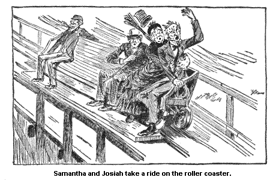
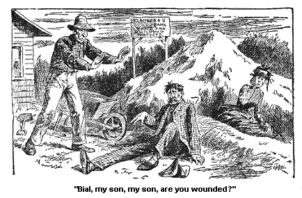
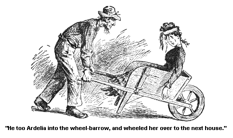

ST. CHRISTINA'S HOME.
Wall, it wuz that very afternoon, almost immegetly after dinner, that Josiah Allen invited me warmly to go with him to the Roller Coaster. And I compromised the matter by his goin' with us first to St. Christina's Home, and then, I told him, I would proceed with him to the place where he would be. They wuz both on one road, nigh to each other, and he consented after some words.
I felt dretfully interested in this Home, for it is a place where poor little sick children are took to, out of their miserable, stiflin', dirty garrets, and cellars, and kep' and made well and happy in their pleasant, home-like surroundin's. And I thought to myself, as I looked ont on the big grounds surroundin' it, and walked through the clean wide rooms, that the change to these children, brought out of their narrow dark homes of want and woe, into this great sunshiny Home with its clean fresh rooms, its good food, its cheery Christian atmosphere, its broad sunshiny playgrounds, must seem like enterin' Paradise to 'em.
And I thought to myself how thankful I wuz that this pleasant House Beautiful, wuz prepared for the rest and refreshment of the poor little pilgrims, worn out so early in the march of life. And I further thinkses I, "Heaven bless the kind heart that first thought on't, and carried out the heavenly idee."
The children's faces all looked, so happy, and bright, it wuz a treat to see 'em. And the face of the sister who showed us round the rooms looked as calm, and peaceful, and happy, as if her face wuz the sun from which their little lights wuz reflected.
Up amongst the rooms overhead, every one on 'em clean as a pin and sweet and orderly, wuz one room that specially attracted my attention. It wuz a small chapel where the little ones wuz took to learn their prayers and say 'em. It wuzn't a big, barren barn of a room, such as I have often seen in similar places, and which I have always thought must impress the children with a awful sense of the immensity and lonesomeness of space, and the intangebility, and distance of the Great Spirit who inhabiteth Eternity. No, it wuz small, and cozy, and cheerful, like a home. And the stained glass window held a beautiful picture of love and charity, which might well touch the children's hearts, sweetly and unconsciously, with the divine worth of love, and beauty, and goodness.
And I could fancy the dear, little ones kneelin' here, and prayin' "Our Father, who art in Heaven," and feelin' that He wuz indeed their Father, and not a stranger, and that Heaven wuz not fur off from 'em.
And I thought to myself "Never! never! through all their life will they get entirely away from the pure, sweet lessons they learn here."
I enjoyed the hour I spent here with a deep, heart enjoyment, and so did Josiah. Or, that is, I guess he did, though he whispered to me from time to time, or even oftener, as we went through the buildin', that we wuz a devourin' time that we might be spendin' at the Roller Coaster.
Wall, at last, greatly to my pardner's satisfaction, we sot out for the place where he fain would be. On our way there we roamed through another Indian Encampment, a smaller one than that where we had the fearful incident of the Mermaid and Sarah.
No, it wuzn't so big, but it had many innocent diversions and a photograph gallery, and other things for its comfert. And a standin' up a leanin' aginst a tree, by one of the little houses stood a Injun. He wuz one of the last left of his tribe. He seemed to be a lookin' pensively on -- and seein' how the land that had belonged to 'em, the happy huntin'-grounds, the springs they believed the Great Spirit had gin to 'em, had all passed away into the bands of another race.
I wuz sorry for that Injun, real sorry. And thinkses I to myself,
we feel considerable pert now, and lively, but who knows in another three
or four hundred years, but what one of the last of our race, may be a leanin'
up aginst some new tree, right in
the same spot, a watchin' the old places passed away into other hands,
mebby black hands, or some other colored ones; mebby yellow ones, who knows?
I don't, nor Josiah don't. But my pardner wuz a hurryin' me on, so
I dropped my revery and my umberell in my haste to foller on after his
footsteps.
Josiah picked up my umberell, but he couldn't pick up my soarin' emotions for me. No, he haint never been able, to get holt of 'em. But suffice it to say, that soon, preceded by my companion, I found myself a mountin' the nearly precipitus stairs, that led to the Roller Coaster.

And havin' reached the spot, who should we find there but Ardelia Tutt and Bial Flamburg. They had been on the Roller Coaster seven times in succession, and the car. And they wuz now a sittin' down to recooperate their energies, and collect their scattered wits together. The Roller Coaster is very scatterin' to wits that are not collected firm and sound, and cemented by strong common sense.
The reason why the Roller Coaster don't scatter such folkses wits is supposed to be because, they don't go on to it. Ardelia looked as if her idees wuz scattered to the four pints of the compass. As for Bial, it seemed to me, as if he never had none to scatter. But he spoke out to once, and said, he didn't care to ride on 'em. (Bial Flamburg's strong pint, is his truthfulness, I can't deny that.)
Ardelia wouldn't own up but what she enjoyed it dretfully. You know folks are most always so. If they partake of a pleasure and recreation that is doubtful in its effects, they will always say, what a high extreme of enjoyment they enjoyed a partakin' of it. Curius, haint it? Wall, Josiah had been anticipatin' so much enjoyment from the exercise, that I didn't make no move to prevent him from embarkin' on it -- though it looked hazardous and dangerous in the extreme.
I looked down on the long valleys, and precipitous heights of the assents and desents, in which my pardner wuz so soon to be assentin' and desentin' and I trembled, and wuz jest about to urge him to forego his diversion, for the sake of his pardner's happiness, but as I turned to expostulate with him, I see the beautiful, joyous, hopeful look on his liniment, and the words fell almost dead on my tongue. I felt that I had ruther suffer in silence than to say one word to mar that bliss.
Such is the love of pardners, and such is some of the agonies they suffer silently to save from woundin' the more opposite one. No, I said not a word; but silently sat, and see him makin' his preparations to embark. He see the expression onto my face, and he too wuz touched by it. He never said one word to me about embarkin' too, which I laid to two reasons. One wuz my immovable determination not to embark on the voyage, which I had confided to him before.
And the other wuz, the added expenses of the journey if he took his companion with him.
No, I felt that he thought it wuz better we should part temporarily than that the expenditure should be doubled. But as the time drew near for him to leave me, I see by his meen that he felt bad about leavin' me. He realized what a companion I had been to him. He realized the safety and repose he had always found at my side and the unknown dangers he wuz a rushin' into.
And he got up and silently shook hands with me. He would have kissed me, I make no doubt, if folks hadn't been a standin' by. He then embarked, and with lightnin' speed wuz bore away from me, as he dissapeared down the desent, his few gray hairs waved back, and as he went over the last precipitus hill, I heard him cry out in agonizin' axents, "Samantha! Samantha!"
And I rushed forwards to his rescue but so lightnin' quick wuz their movements that I met my companion a comin' back, and I sez, the first thing, "I heard your cry, Josiah! I rushed to save you, my dear pardner."
"Yes," sez he, "I spoke out to you, to call your attention to the landscape, over the woods there!"
I looked at him in a curious, still sort of a way, and didn't say nothin' only just that look. Why, that man looked all trembly and broke up, but he kep' on.
"Yes, it wuz beautiful and inspirin', and I knew you wuz such a case for landscapes, I thought I would call your attention to it."
Sez I, coldly, "You wuz skairt, Josiah Allen, and you know it."
"Skairt! the idee of me bein' skairt. I wuz callin' your attention to the beauty of the view, over in the woods."
"What wuz it?" sez I, still more coldly; for I can't bear deceit, and coverin' up.
"Oh, it wuz a house, and a tree, and a barn, and things."
"A great seen to scream about," sez I. "It would probable have stood there till you got back, but you couldn't seem to wait."
"No, I have noticed that you always wanted to see things to once. I have noticed it in you."
"I could most probable have waited till you got back, to see a house and a tree." And in still more -- frigid axents, I added, "Or a barn." And I sez, kinder sarkastikly, "You enjoyed your ride, I s'pose."
"Immensely, it wuz perfectly beautiful! So sort a free and soarin' like. It is jest what suits a man."
"You'd better go right over it agin," sez I.
"Yes," sez the man who runs the cars. "You'd better go agin."
"Oh no," sez Josiah.
"Why not?" sez I.
"Why not?" sez the man.
Josiah Allen looked all around the room, and down on the grass, as if trying to find a good reasonable excuse a layin' round loose somewhere, so's he could get holt of it.
"You'd better go," sez I, "I love to see you happy, Josiah Allen."
"Yes, you'd better go," sez the man.
"No!" sez Josiah, still a lookin' round for a excuse, up into the heavens and onto the horizon. And at last his face kinder brightenin' up, as if he had found one: "No, it looks so kinder cloudy, I guess I won't go. I think we shall have rain between now and night." And so we said no more on the subject and sot out homewards.
Ardelia wrote a poem on the occasion, wrote it right there, with rapidity and a lead pencil, and handed it to me, before I left the room. I put it into my pocket and didn't think on it, for some days afterwards.
That night after we got home from the Roller Coaster, I felt dretful sort a down hearted about Abram Gee, I see in that little incident of the day, that Bial, although I couldn't like him, yet I see he had his good qualities, I see how truthful he wuz. And although I love truth -- I fairly worship it -- yet I felt that if things wuz as he said they wuz, he would more'n probable get Ardelia Tutt, for I know the power of Ambition in her, and I felt that she would risk the chances of happiness, for the name of bein' a Banker's Bride.
So I sat there in deep gloom, and a chocolate colored wrapper, till as late as half past nine o'clock P. M. And I felt that the course of Abram's love wuz not runnin' smooth. No, I felt that it wuz runnin' in a dwindlin' torrent over a rocky bed, and a precipitus one. And I felt that if he wuz with me then and there, if we didn't mingle our tears together we could our sithes, for I sithed, powerful and frequent.
Poor short-sighted creeter that I wuz, a settin' in the shadow, when the sun wuz jest a gettin' ready to shine out onto Abram and reflect off onto my envious heart. Even at that very time the hand of righteous Retribution had slipped its sure noose over Bial Flamburg's neck, and wuz a walkin' him away from Ardelia, away from happiness (oritory).
At that very hour, half past nine P. M., Ardelia Tutt and Abram Gee had met agin, and rosy love and happiness wuz even then a stringin' roses on the chain that wuz to bind 'em together forever.
The way on't wuz: It bein' early when Ardelia got here, Bial proposed to take her out for a drive and she consented. He got a livery horse, and buggy, and they say that the livery man knew jest what sort of a creeter the horse wuz, and knew it wuz liable to break the buggy all to pieces and them to, and he let 'em have it for goin.' But howsumever, whether that is so or not, when they got about five or six milds from Saratoga the horse skeert out of the road, and throwed 'em both out.
It wuz a bank of sand that skeert it, a high bank that wuz piled up by a little hovel that stood by the side of the road. The ground all round the hut wuz too poor to raise anything else but sand, and had raised sights of that.
A man and woman, dretful shabby lookin', wuz a standin' by the door of the hut, and the man had a shovel in his hand, and had been a loadin' sand into a awful big wheelbarrow that wuz a standin' by -- seemin'ly ready to carry it acrost the fields, to where some man wuz a mixin' some motar, to lay the foundations of a barn.
Wall, the old man stood a pantin' by the side of the wheelbarrow, as if he had indeed got on too heavy a load. It wuz piled up high. The horse shied, and Ardelia wuz throwed right out onto the bank of sand, Bial by the side of her. And the old man and woman came a runnin' up, and callin' out, "Bial, my son, my son, are you wounded?"

And there it all wuz. Ardelia see the hull on it. The Banker wuz before her, and she wuz a layin' on the bank. And the banker wuz a doin' a heavy business, if anybody doubted it, let 'em take holt and cart a load on it acrost the fields.
Wall, Ardelia wuz jarred fearful, in her heart, her ambition, her pride, and her bones. And as the horse wuz a fleein' far away, and no other conveyance could be found to transport her to the next house (Ardelia wouldn't go into his'n), and night wuz approachin' with rapid strides, the old Banker jest unloaded the load of sand (good old creeter, he would have to load it all over agin), and took Ardelia into the wheelbarrow, and wheeled her over to the next house and unloaded her.

The old Banker told Ardelia that when his neighbor got home he would take her back to Saratoga, which he did. He had been to the village for necessaries, but he turned right round and carried her back to Mr. Pixleyses. And I s'pose Ardelia paid him, mebby as high as 75 cents. As for Bial, he tramped off into the house, and she didn't see him agin, nor didn't want to. Wall, I s'pose it wuz durin' that ride on the wheelbarrow, that Ardelia's ambition quelled to softer emotions. I s'pose so. She never owned it right up to me, but I s'pose so.
Bial Flamburg hadn't lied a word to her. In all her agony she realized that. But she had built a high towerin' structure of ambition on what he said, and it had tottered. And as is natural in times of danger, the heart turns instinctively to its true love, she thought of Abram Gee, she wanted him. And as if in answer to her deep and lovin' thought, who should come out to the buggy to help her out at Mr. Pixleyses gate, but Abram Gee? He had come unexpected, and on the eight o'clock train, and wuz there waitin' for her.
If Bial Flamburg had been with her, he wouldn't have gone a nigh the buggy, but he see it was a old man, and he rushed out. Ardelia couldn't walk a step on her feet (owin' to bein shaken up, in bones and feelin's), and Abram jest took her in his strong lovin' arms and carried her into the house, and she sort a clung round his neck, and seemed tickled enough to see him,
But she wuz dretful shook up and agitated, and it wuzn't till way along in the night some time, that she wuz able to write a poem called, "a lay on a wheelbarrow; or, the fallen one."
Which I thought when I read it, wuz a good name for it, for truly she had fell, and truly she had lay on it. Howsumever, Ardelia wrote that jest because it wuz second nater to write poetry on every identical thing she ever see or did.
She wuz glad enough to get rid of Bial Flamburg, and glad enough to go back to her old love. Abram wuz too manly and tender to say a word to Ardelia that night on the subject nearest to his heart. No, he see she needed rest. But the next day, when they wuz alone together, I s'pose he put the case all before her. All his warm burnin' love for her, all his jealousy, and his wretchedness while she wuz a waverin' between Banks and Bread, how his heart had been checked by the thought that Bial would vault over him, and in the end hold him at a discount.
Why, I s'pose he talked powerful and melted Ardelia's soft little heart till it wuz like the softest kind of dough in his hands. And then he went on tenderly to say, how he needed her, and how she could mould him to her will. I s'pose he talked well, and eloquent, I s'pose so. Anyhow she accepted him right there in full faith and a pink and white cambric dress.
And they came over and told me about it in the afternoon P. M. And I felt well and happy in my mind, and wished 'em joy with a full heart and a willin' mind.
They are both good creeters. And she bein' so soft, and he so kinder hardy and stout-hearted, I believe they will get along firstrate. And when she once let her mind and heart free to think on him, she worships him so openly and unreservedly (though soft), that I don't, believe there is a happier man in the hull country.
Wall, I lay out to give'em a handsome present when they be married, which will be in the fall. Mother Gee (who has got as well as can be expected) is goin' to live with Susan. And I'm glad on't. Mother Gee is a good old female no doubt, but it is resky work to take a new husband to live with, and when you take a mother-in-law too it adds to the resk.
But she is goin' to live with Susan; it is her prefference.
And Abram has done so well, that he has bought another five acres onto his place, and is a goin' to fix his house all over splendid before the weddin' day. And Ardelia is to go right from the altar to her home -- it is her own wishes.
She knows enough in her way, Ardelia duz. And she has a wisdom of the heart which sometimes I think, goes fur ahead of the wisdom of the head. And then agin, I think they go well together, wisdom of the head and the heart too. (The times I think this is after readin' her poetry.)
But any way she will make Abram a good soft little wife, lovin' and
affectionate always. And good land! he loves her to that extent that
it wouldn't make no difference to him if she didn't know enough to come
in when it rained. He would fetch her in, drippin' and worship her,
damp or dry.